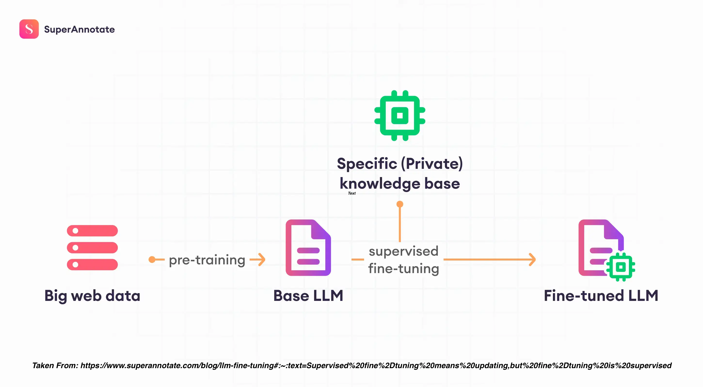
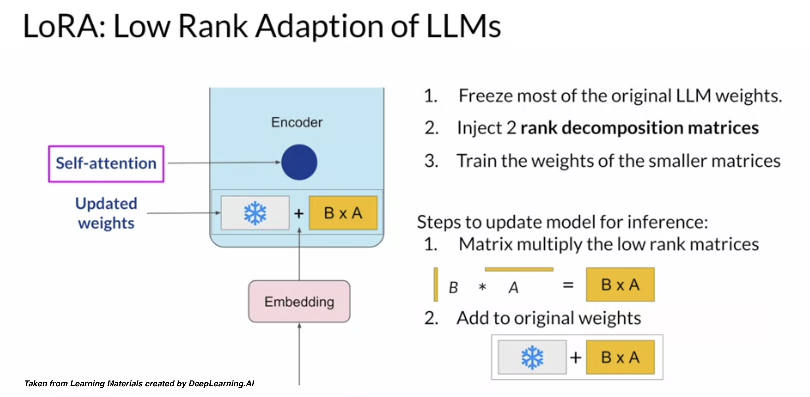

Fine-Tuning#
Fine-tuning is a supervised learning process that uses a data set of labeled examples to update the weights of an LLM. The labeled examples or prompt-completion pairs are used to improve the LLM’s ability to generate good completions for a specific task.

Fine-tuning takes LLMs beyond basic prompting by allowing you to train a model on a larger dataset specifically tailored to your desired task, leading to several advantages:
Superior Results: Compared to prompting, fine-tuning delivers higher quality outputs because the model learns directly from a wider range of examples.
Efficiency: You can train on more data than can fit in a single prompt, saving on token usage and reducing latency for requests.
Specificity: Fine-tuning excels at tasks requiring specific styles, tones, formats, or consistent outputs. It enhances reliability in achieving your desired results, handles complex instructions better, and tackles edge cases effectively.
New Skills: Fine-tuning empowers the model to master new skills or complete tasks that are difficult to articulate through simple prompts.
What you need#
Fine-tuning is a time-intensive process that requires:
1.) a ground-truth dataset - This is a comprehensive and high-quality dataset that the model can learn from. It should be representative of the problem space and contain examples of the types of tasks you want the model to perform.
2.) intricate code - Fine-tuning a model is not a straightforward process. It requires intricate, carefully crafted code that can effectively guide the model’s learning process. This includes setting up the learning rate, batch size, number of epochs, and other hyperparameters, as well as implementing the training loop.
3.) iteration - Fine-tuning an LLM is rarely a “one and done” task. It often involves multiple iterations of training, evaluation, and refinement. After each round of training, the model’s performance should be evaluated using a separate validation dataset. Based on the results, adjustments may need to be made to the model architecture, hyperparameters, or training data. This iterative process continues until the model’s performance meets the desired criteria.
When to use it#
Before delving into the mechanics of fine-tuning; note that it might not always be the best solution. Here’s a breakdown of when to apply prompt-engineering, RAG, or fine-tuning:
Use Prompt Engineering for:
Achieving good results for simpler tasks without extensive training data. You can improve prompts with:
Few-shot in-context learning - providing examples of respsonses within the prompt
Prompt chaining - breaking down complex tasks into smaller, sequential prompts for the model to follow.
Use Retrieval-Augmented Generation (RAG) for:
Situations with a large, relevant document database.
Tasks requiring factual accuracy where context retrieval is beneficial.
Use Fine-Tuning for:
Tasks requiring consistent outputs in a particular style, tone, or format.
Achieving specific behaviors from the model.
Mastering complex tasks that are difficult to express through simple prompts.
Note
Our advice is to experiment with crafting effective instructions and prompts for the model before attempting fine-tuning. Prompt engineering is low-cost and does not require any programming. Different prompting techniques can be used, such as few-shot in-context learning and chain-of-thought prompts. Fine-tuning requires more effort – it requires a collection of supervised training examples, some programming work, extra GPU resources, and extra storage for a model with updated weights.
Step 1 - Test base models#
In this workshop, we’ll demonstrate how to fine-tune a Mistral 7B model. Mistral is especially apt for performing classification tasks.
The first step in fine-tuning should always be to properly load and test out-of-the-box models. We recommend trying a few different models and model sizes. The code below loads a quantized Mistral model using Transformers. It uses the first text example from the AG News dataset on Hugging Face here: https://huggingface.co/datasets/ag_news. It asks the model to classify this text into 1 of 4 categories:
0 - World News
1 - Sports
2 - Business
3 - Science and Technology.
It places this prompt in the Mistral prompt syntax. You can find query_initial.py script in the scripts/fine_tune folder of our github repo.
#############################
# Fine Tune - Initial Query
#############################
# import libraries
import torch
from transformers import AutoTokenizer, AutoModelForCausalLM, BitsAndBytesConfig
import bitsandbytes as bnb
# model paths
llm_dir = "/kellogg/data/llm_models_opensource/mistral_mistralAI"
model_id = "mistralai/Mistral-7B-Instruct-v0.2"
# quantized model loading
bnb_config = BitsAndBytesConfig(
load_in_4bit=True,
bnb_4bit_use_double_quant=True,
bnb_4bit_quant_type="nf4",
bnb_4bit_compute_dtype=torch.bfloat16
)
# model loading
model = AutoModelForCausalLM.from_pretrained(model_id, quantization_config=bnb_config, device_map={"":0}, cache_dir=llm_dir)
tokenizer = AutoTokenizer.from_pretrained(model_id, add_eos_token=True, cache_dir=llm_dir)
# query function
def get_completion(query: str, model, tokenizer) -> str:
device = "cuda:0"
prompt_template = """
<s>
[INST]
Classify the following text into one of the four classes: 0 - World, 1 - Sports, 2 - Business, 3 - Sci/Tech.
{query}
[/INST]
</s>
<s>
"""
prompt = prompt_template.format(query=query)
encodeds = tokenizer(prompt, return_tensors="pt", add_special_tokens=True)
model_inputs = encodeds.to(device)
generated_ids = model.generate(**model_inputs, max_new_tokens=1000, do_sample=True, pad_token_id=tokenizer.eos_token_id)
decoded = tokenizer.batch_decode(generated_ids)
return (decoded[0])
# query
query = """
Wall St. Bears Claw Back Into the Black (Reuters) Reuters - Short-sellers, Wall Street's dwindling band
of ultra-cynics, are seeing green again.
"""
# submit query
result = get_completion(query=query, model=model, tokenizer=tokenizer)
print(result)
Output:
/kellogg/software/envs/gpu-llama2/lib/python3.10/site-packages/diffusers/utils/outputs.py:63: UserWarning: torch.utils._pytree._register_pytree_node is deprecated. Please use torch.utils._pytree.register_pytree_node instead.
torch.utils._pytree._register_pytree_node(
/kellogg/software/envs/gpu-llama2/lib/python3.10/site-packages/diffusers/utils/outputs.py:63: UserWarning: torch.utils._pytree._register_pytree_node is deprecated. Please use torch.utils._pytree.register_pytree_node instead.
torch.utils._pytree._register_pytree_node(
Loading checkpoint shards: 100%|██████████████████████████████████████████████████████████████████████████| 3/3 [00:12<00:00, 4.30s/it]
Loading checkpoint shards: 100%|██████████████████████████████████████████████████████████████████████████| 3/3 [00:12<00:00, 4.32s/it]
A decoder-only architecture is being used, but right-padding was detected! For correct generation results, please set `padding_side='left'` when initializing the tokenizer.
<s>
<s>
[INST]
Below is a text from AG News dataset. Classify it into one of the four classes: World, Sports, Business, Sci/Tech.
Wall St. Bears Claw Back Into the Black (Reuters) Reuters - Short-sellers, Wall Street's dwindling band
of ultra-cynics, are seeing green again.
[/INST]
</s>
<s>
</s> This text can be classified as: Business.
The reason for this classification is that the text discusses "Wall Street's dwindling band of ultra-cynics" and "short-sellers" who are "seeing green again." These terms are typically associated with finance and investing, which falls within the Business category. The mention of Wall Street is also a strong indicator of a Business article.
Please note that even though the text mentions "greent" or money, it doesn't necessarily have to be classified as a Sports article, as the term "green" in this context is indicative of profit or capital gained in financial markets.
Additionally, Sci/Tech and World classifications are unlikely, as the text doesn't contain specific information related to those domains.</s>
You’ll notice that while it provides the correct answer, the response is very verbose. This a prime example of where fine-tuning can help!
Step 2 - Prepare Dataset#
As described earlier, we can use the AG News dataset on Hugging Face to fine-tune Mistral 7B. To apply a training dataset, you need to make sure it is in json format with a column that provides the prompt and response (preferably in the model syntax). You can find prepare_data.py script in the scripts/fine_tune folder of our github repo.
#############################
# Fine Tune - Prepare Dataset
#############################
# import libraries
import json
from datasets import load_dataset
import pandas as pd
# create a prompt/response row
def create_text_row(row):
text_row = f"<s>[INST] Classify the following text into one of the four classes: 0 - World, 1 - Sports, 2 - Business, 3 - Sci/Tech. {row['text']} [/INST] \\n {row['label']} </s>"
return text_row
# process the dataframe to jsonl
def process_dataframe_to_jsonl(output_file_path, df):
with open(output_file_path, "w") as output_jsonl_file:
for _, row in df.iterrows():
json_object = {
"text": create_text_row(row),
"label": row["label"]
}
output_jsonl_file.write(json.dumps(json_object) + "\n")
# load the dataset
dataset = load_dataset("ag_news", split="train")
dataset = dataset.train_test_split(test_size=0.2)
train_data = dataset["train"]
test_data = dataset["test"]
# jsonl file paths
train_json_file = "/kellogg/data/llm_models_opensource/mistral_mistralAI/fine_tune/ag_news/data/train_data.jsonl"
test_json_file = "/kellogg/data/llm_models_opensource/mistral_mistralAI/fine_tune/ag_news/data/test_data.jsonl"
# convert data to pandas
train_df = train_data.to_pandas()
test_df = test_data.to_pandas()
# process and save json files
process_dataframe_to_jsonl(train_json_file, train_df)
process_dataframe_to_jsonl(test_json_file, test_df)
# Load the JSON file into a DataFrame
test_df = pd.read_json(test_json_file, lines=True)
print("===========================")
print("Data processing complete.")
print("Here is a sample of the training data:")
print(test_df.head())
print("test_df text value:" + test_df['text'][0])
print("===========================")
Output:
===========================
Data processing complete.
Here is a sample of the training data:
text label
0 <s>[INST] Classify the following text into one... 3
1 <s>[INST] Classify the following text into one... 1
2 <s>[INST] Classify the following text into one... 2
3 <s>[INST] Classify the following text into one... 0
4 <s>[INST] Classify the following text into one... 1
===========================
Step 3 - Fine Tune#
Once the data is prepared, we can fine-tune the pre-trained Mistral model using a combination of techniques for efficiency and effectiveness.
Techniques#
Full Fine-Tuning: involves adjusting all the parameters of the LLM during the training process. This approach allows the model to fully adapt to the new task, potentially leading to higher performance. However, it requires a large amount of data and computational resources, and there’s a risk of catastrophic forgetting (the model could forget to do tasks it perform before.)
Partially Embedded Fine-Tuning (PEFT), on the other hand, only fine-tunes a subset of the model’s parameters. This strategy requires less memory and computational resources to perform, making it a more efficient choice in certain scenarios. By only updating a portion of the model, it may not be as effective when the model needs to significantly alter its initial learning or “forget” tasks it initially performed poorly. Two of the most effective PEFT methods are:
Reparameterization - reparameterizes model weights into a low-rank format. One example is LoRA (Low-Rank Adaptation), which uses rank decomposition matrices to efficiently update model parameters.
Additive - freezes all the original LLM weights while adding trainable layers or paramters to the model. One example is called prompt tuning that freezes model weights, but adds trainable tokens (soft prompts) to the prompt embeddings. This only updates the prompt weights.
Today, we’ll be applying LoRA for fine-tuning.

Steps#
We’ll load a pre-trained Mistral model and prepare it for training. We then identify the most important parts in the model using LoRA. These modules are targeted in the PEFT process. The model is then fine-tuned using the SFTTrainer to update the model parameters.
We then save the fine-tuned model. After that, we merge the base model with the fine-tuned model. This merging process allows the fine-tuned model to benefit from the knowledge in the base model, while also incorporating the updates made during the fine-tuning process.
You can find fine_tune.py script in the scripts/fine_tune folder of our github repo.
#######################################
# Fine Tuning using PEFT, LoRA, and SFT
#######################################
# import libraries
import torch
from transformers import AutoModelForCausalLM, TrainingArguments, DataCollatorForLanguageModeling
import bitsandbytes as bnb
from lora import LoraConfig, get_peft_model, PeftModel
from sft import SFTTrainer
from datasets import load_from_disk
# model paths
llm_dir = "/kellogg/data/llm_models_opensource/mistral_mistralAI"
model_id = "mistralai/Mistral-7B-Instruct-v0.2"
# quantized model loading
bnb_config = BitsAndBytesConfig(
load_in_4bit=True,
bnb_4bit_use_double_quant=True,
bnb_4bit_quant_type="nf4",
bnb_4bit_compute_dtype=torch.bfloat16
)
# model loading
model = AutoModelForCausalLM.from_pretrained(model_id, quantization_config=bnb_config, device_map={"":0}, cache_dir=llm_dir)
tokenizer = AutoTokenizer.from_pretrained(model_id, add_eos_token=True, cache_dir=llm_dir)
# load the train and test datasets
train_data = load_from_disk("/kellogg/data/llm_models_opensource/mistral_mistralAI/fine_tune/ag_news/data/train_data.jsonl")
test_data = load_from_disk("/kellogg/data/llm_models_opensource/mistral_mistralAI/fine_tune/ag_news/data/test_data.jsonl")
# find modules in the model
def find_all_linear_names(model):
cls = bnb.nn.Linear4bit
lora_module_names = set()
for name, module in model.named_modules():
if isinstance(module, cls):
names = name.split('.')
lora_module_names.add(names[0] if len(names) == 1 else names[-1])
if 'lm_head' in lora_module_names: # needed for 16-bit
lora_module_names.remove('lm_head')
return list(lora_module_names)
model.gradient_checkpointing_enable()
model = prepare_model_for_kbit_training(model)
modules = find_all_linear_names(model)
# configure LoRA
lora_config = LoraConfig(
r=8,
lora_alpha=32,
target_modules=modules,
lora_dropout=0.05,
bias="none",
task_type="CAUSAL_LM"
)
model = get_peft_model(model, lora_config)
# calculate the number of trainable parameters
trainable, total = model.get_nb_trainable_parameters()
print(f"Trainable: {trainable} | total: {total} | Percentage: {trainable/total*100:.4f}%")
# set padding token
tokenizer.pad_token = tokenizer.eos_token
# clear GPU memory cache
torch.cuda.empty_cache()
# setup and start training
trainer = SFTTrainer(
model=model,
train_dataset=train_data,
eval_dataset=test_data,
dataset_text_field="text",
peft_config=lora_config,
args=TrainingArguments(
per_device_train_batch_size=1,
gradient_accumulation_steps=4,
warmup_steps=0.03,
max_steps=100,
learning_rate=2e-4,
logging_steps=1,
output_dir="outputs",
optim="paged_adamw_8bit",
save_strategy="epoch",
),
data_collator=DataCollatorForLanguageModeling(tokenizer, mlm=False),
)
trainer.train()
# save the model
new_model = "mistralai-Code-Instruct-ag_news" #Name of the model you will be pushing to huggingface model hub
trainer.model.save_pretrained(new_model)
# merge the models
base_model = AutoModelForCausalLM.from_pretrained(
model_id,
low_cpu_mem_usage=True,
return_dict=True,
torch_dtype=torch.float16,
device_map={"": 0},
)
merged_model= PeftModel.from_pretrained(base_model, new_model)
merged_model= merged_model.merge_and_unload()
# save the merged model
merged_model.save_pretrained(new_model, safe_serialization=True)
tokenizer.save_pretrained(new_model)
tokenizer.pad_token = tokenizer.eos_token
tokenizer.padding_side = "right"
Step 4 - Test Fine-tuned Model#
Finally, we can test the fine-tuned model on our test dataset. Here we’ll revisit our initial query. You can find query_finetune.py script in the scripts/fine_tune folder of our github repo.
################################
# Fine Tune - Query Merged Model
################################
# import libraries
import torch
from transformers import AutoTokenizer, AutoModelForCausalLM, BitsAndBytesConfig
import bitsandbytes as bnb
# quantized model loading
bnb_config = BitsAndBytesConfig(
load_in_4bit=True,
bnb_4bit_use_double_quant=True,
bnb_4bit_quant_type="nf4",
bnb_4bit_compute_dtype=torch.bfloat16
)
# model path
llm_path = "/kellogg/data/llm_models_opensource/mistral_mistralAI/fine_tune/ag_news/mistralai-Code-Instruct-ag_news"
model = AutoModelForCausalLM.from_pretrained(llm_path, quantization_config=bnb_config, device_map={"":0})
tokenizer = AutoTokenizer.from_pretrained(llm_path, add_eos_token=True)
# query function
def get_completion(query: str, model, tokenizer) -> str:
device = "cuda:0"
prompt_template = """
<s>
[INST]
Classify the following text into one of the four classes: 0 - World, 1 - Sports, 2 - Business, 3 - Sci/Tech.
{query}
[/INST]
</s>
<s>
"""
prompt = prompt_template.format(query=query)
encodeds = tokenizer(prompt, return_tensors="pt", add_special_tokens=True)
model_inputs = encodeds.to(device)
generated_ids = model.generate(**model_inputs, max_new_tokens=1000, do_sample=True, pad_token_id=tokenizer.eos_token_id)
decoded = tokenizer.batch_decode(generated_ids)
return (decoded[0])
# query
query = """
Wall St. Bears Claw Back Into the Black (Reuters) Reuters - Short-sellers, Wall Street's dwindling band
of ultra-cynics, are seeing green again.
"""
# submit query
result = get_completion(query=query, model=model, tokenizer=tokenizer)
print(result)
Output:
/kellogg/software/envs/gpu-llama2/lib/python3.10/site-packages/diffusers/utils/outputs.py:63: UserWarning: torch.utils._pytree._register_pytree_node is deprecated. Please use torch.utils._pytree.register_pytree_node instead.
torch.utils._pytree._register_pytree_node(
/kellogg/software/envs/gpu-llama2/lib/python3.10/site-packages/diffusers/utils/outputs.py:63: UserWarning: torch.utils._pytree._register_pytree_node is deprecated. Please use torch.utils._pytree.register_pytree_node instead.
torch.utils._pytree._register_pytree_node(
Loading checkpoint shards: 100%|██████████████████████████████████████████████████████████████████████████| 3/3 [00:14<00:00, 4.82s/it]
A decoder-only architecture is being used, but right-padding was detected! For correct generation results, please set `padding_side='left'` when initializing the tokenizer.
<s>
<s>
[INST]
Classify the following text into one of the four classes: 0 - World, 1 - Sports, 2 - Business, 3 - Sci/Tech.
Wall St. Bears Claw Back Into the Black (Reuters) Reuters - Short-sellers, Wall Street's dwindling band
of ultra-cynics, are seeing green again.
[/INST]
</s>
<s>
</s> The text appears to fall into class 2 - Business.
While the output still contains slightly more text than we requested, it provides a concise response of class 2 - Business.